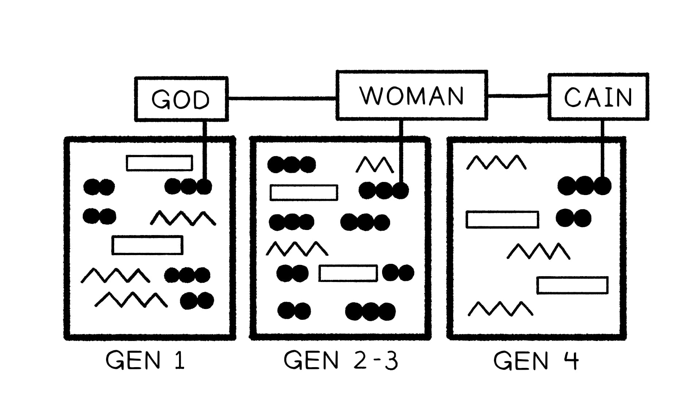

Gênesis 1 nos ensinou que Deus é o provedor, avaliador e “conhecedor” supremo do que é bom, e sabemos que ele designou os humanos para governar o mundo em seu nome como sua imagem divina. Os humanos têm uma escolha diante de si, simbolizada por duas árvores: uma representa a vida (que é boa), e a outra representa conhecer o bem e o mal. Permitirão os humanos que Deus seja o “conhecedor” primordial do que é bom?Genesis 1 taught us that God is the provider, evaluator, and ultimate “knower” of what is good, and we know that he has appointed humans to rule the world on his behalf as his divine image. The humans have a choice before them, symbolized by two trees: one represents life (which is good), and the other represents knowing good and bad. Will the humans allow God to be the prime “knower” of what is good?
Tema: diálogo sobre o comer do fruto. Personagens: Yahweh, ha’adam, a mulher. Cenário: dentro do jardim.Theme: dialogue about the eating of the fruit. Characters: Yahweh, ha’adam, the woman. Setting: inside the garden.
Yahweh: “Comeste do fruto...?”Yahweh: “Did you eat...?”
| Gênesis 2-3: Adão e Eva | Gênesis 4: Caim e Abel |
| Humano tentado por um “animal” 3:1: Ora, a serpente era mais astuta que qualquer criatura do campo... e disse à mulher: “Será que Deus realmente disse para não comer de nenhuma árvore do jardim?” | 4:7: “Mas se não fizeres o bem, o pecado é um agachado à porta, e o seu desejo é por ti.” |
| Humano cede à tentação com consequências destrutivas 3:6: Quando a mulher viu que a árvore era boa para alimento, e agradável aos olhos, e desejável para alcançar sabedoria... ela tomou | 4:5: E Caim ficou muito irado 4:8: E Caim falou com Abel, seu irmão, e enquanto estavam no campo Caim se levantou contra Abel, seu irmão, e o matou. |
| Deus aparece para fazer uma pergunta que conduz 3:9: E Deus chamou o humano, e disse: “Onde estás (איכה)?” 3:13: E Deus disse à mulher: “Que fizeste?” (מה עשית) | 4:9: E Deus disse a Caim: “Onde está (אי) teu irmão Abel?” 4:10: E Deus disse: “Que fizeste?” (מה עשית) |
| Humano desvia a pergunta 3:12: O humano disse: “A mulher que puseste comigo, ela me deu e eu comi.” | 4:9: “Não sei! Sou eu o guarda do meu irmão?” |
| O perpetrador é amaldiçoado 3:14: Deus disse à serpente: “Porque fizeste isto, és amaldiçoada de todo animal e de toda criatura do campo.” | 4:11: “E agora és amaldiçoado desde a terra.” |
| Desejo invertido 3:16: “Teu desejo será para teu marido, e ele te governará.” | 4:7: “O pecado... o seu desejo é por ti, e tu o governarás.” |
| Trabalhar a terra será agora mais difícil 3:17b: “em dor comerás da terra” 3:23: E Deus o enviou do jardim do Éden para trabahar a terra | 4:12: “Pois trabalharás a terra, e ela não dará mais sua força a ti.” |
| O humano é banido da presença divina 3:23-24: E [Deus] banriu o humano e acampou a leste do jardim do Éden | 4:14: “Eis que me baniste da face da terra e da tua presença.” 4:16: E Caim habitou na terra de Node, a leste do Éden. |
Observe que em cada elemento paralelo, o leitor é convidado a fazer comparações e contrastes entre as duas histórias que oferecem insight sobre o caráter de Caim.Notice that in each parallel element, the reader is invited to make comparisons and contrasts between the two stories that offer insight into Cain’s character.
Em ambas as histórias, o “testador” é apresentado como um animal — é uma serpente em Gênesis 3, e em Gênesis 4 o “pecado” é animado como um “agachado,” uma realidade semelhante a um animal que quer tomar a vida dos outros para si.In both stories, the “tester” is presented as an animal—it’s a snake in Genesis 3, and in Genesis 4 “sin” is animated as a “croucher,” an animal-like reality that wants to take the lives of others for its own.
Gênesis 3 e 4 “foram propositalmente justapostos pelo efeito que teriam no início da sequência de episódios primevos do Éden à Torre de Babel... O primeiro humano é sondado dentro do jardim, enquanto Caim é testado fora do jardim. O primeiro teste é o do primeiro humano que é advertido a não comer... para que não morra. O segundo teste é o de seu filho Caim que é exortado a governar sobre o pecado, para que seu irmão não morra... O primeiro testador é uma serpente misteriosa, o segundo é um personagem animado chamado ‘pecado’. Enquanto o homem e a mulher compartilham a responsabilidade... Caim sozinho é culpado por seu crime.”Genesis 3 and 4 “were purposely juxtaposed for the effect they would have early on in the sequence of primeval episodes from Eden to the Tower of Babel … The first human is probed within the garden, while Cain is tested outside the garden. The first test is that of the first human who is warned not to eat … lest he die. The second test is that of his son Cain who is admonished to rule over sin, so that his brother doesn’t die … The first tester is a mysterious snake, the second is an animated character called ‘sin.’ While the man and woman share responsibility … Cain alone is guilty for his crime.”
German, Igal (2016). A Queda Reconsiderada: Uma Síntese Literária das Narrativas Primevas do Pecado. Pickwick Publications. 4. German, Igal (2016). The Fall Reconsidered: A Literary Synthesis of the Primeval Sin Narratives. Pickwick Publications. 4.
Falamos sobre a palavra repetida “bom” algumas sessões atrás também. Resuma o que você aprendeu sobre como o autor usa a palavra “bom” para estabelecer a história da Bíblia.We talked about the repeated word “good” a few sessions ago as well. Summarize what you've learned about how the author uses the word "good" to set up the story of the Bible.